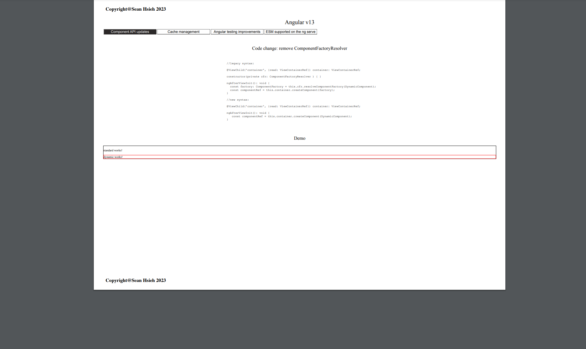

<app-page-container
  [title]="title"
  [sections]="sections"
  [sectionTitles]="sectionTitles"
  [getIdFromTitle]="getIdFromTitle"
  >

  <app-section-container>
    <div class="title" [id]="getIdFromTitle(sectionTitles[0])" title>{{ sectionTitles[0] }}</div>
    <div class="description-container">
      <div class="item">
        The proxy configuration support ESM (ES6 modules) now.
        We are able to create the proxy file in the .mjs file format directly.
      </div>
      <div class="item">
      </div>
      <div class="item">
        <app-code-container key="stepsESM">
        </app-code-container>
      </div>
      <div class="item">
        The following result demostrate the ESM proxy file works.
      </div>
      <div class="item">
        <div class="button-container">
          <button class="export" (click)="printFromServer()">
            Export PDF from server
          </button>    
        </div>
      </div>
      <div class="item">
        <div class="image-container">
          
        </div>
      </div>
    </div>
  </app-section-container>

  <app-section-container>
    <div class="title" [id]="getIdFromTitle(sectionTitles[1])" title>{{ sectionTitles[1] }}</div>
    <div class="description-container">
      
    </div>  
  </app-section-container>

  <!-- evaluation -->
  <app-section-container>
    <div class="title" [id]="getIdFromTitle(sectionTitles[2])" title>{{ sectionTitles[2] }}</div>
    <app-evaluation-container
      [pros]="pros"
      [cons]="cons">
    </app-evaluation-container>
  </app-section-container>

  <!-- reference -->
  <app-section-container>
    <div class="title" [id]="getIdFromTitle(sectionTitles[3])" title>{{ sectionTitles[3] }}</div>
    <div class="reference-container">
      <div class="item">
        <app-reference-container [references]="referencesMap">
        </app-reference-container>
      </div>
    </div>
  </app-section-container>
</app-page-container>

